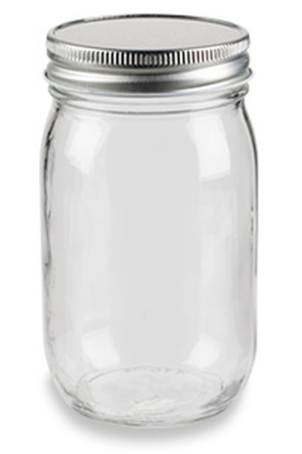
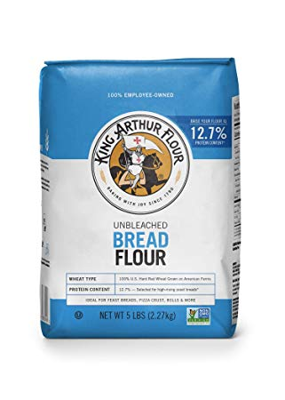
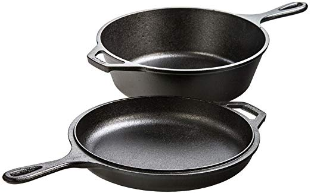
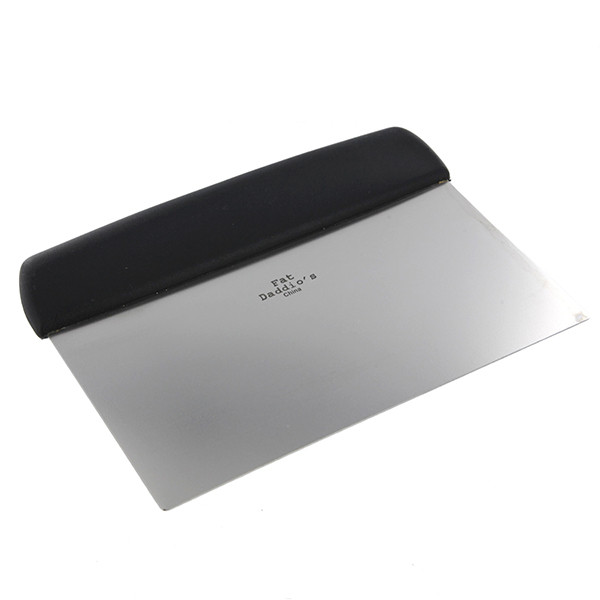
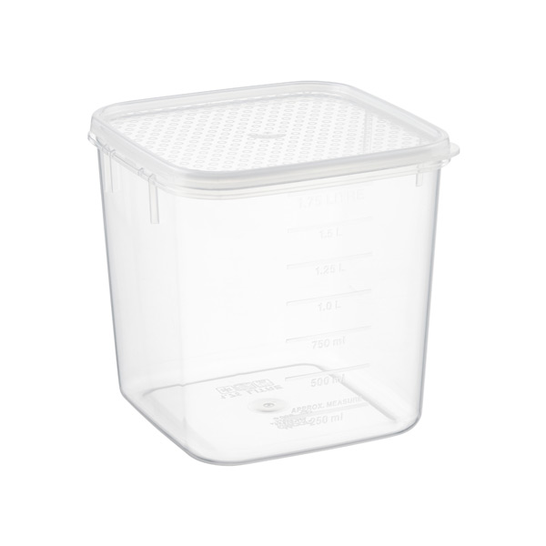
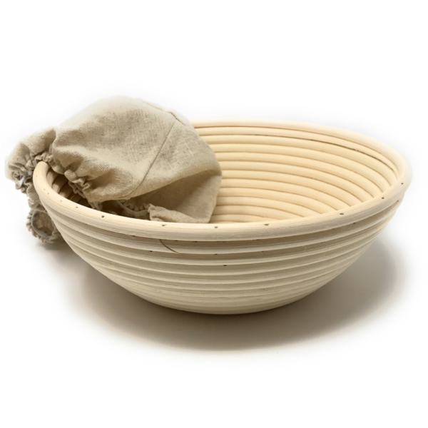
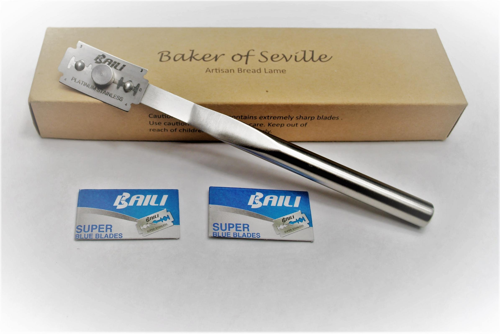
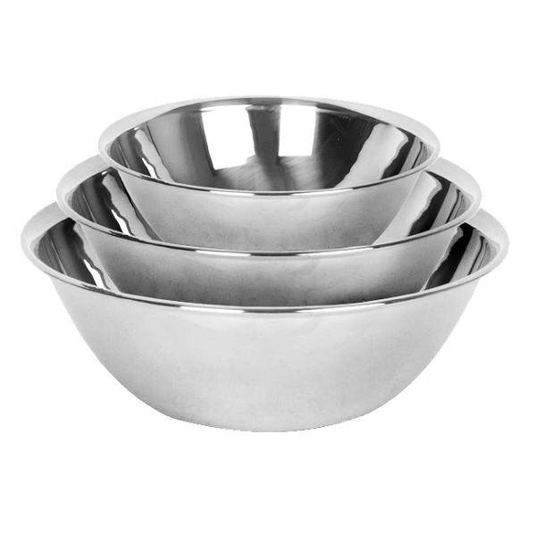

| The Item | Why? | A Container |
Mason jar, plastic container... old spaghetti jar, left over togo soup container. Anything works for it, but your going to need something to hold and feed your starter in. |
|---|---|
Flour |
You're going to need a hand full of different flour types, but I highly recommend on getting a higher quality flour due to the higher protien content. Here are the flours you will need to bake and handle your first loaf.
|
Cast Iron Dutch Oven |
You can find one on amazon for about $40, and you don't actually need it until you start making the dough starter. |
Bench Scraper |
A handy and trustworthy tool to have to make working with dough that much easier. |
Taller plastic container |
A container to place the dough in while it ferments and rises. |
Proofing Bowl |
Peferably 2, but you can alternatively use a larger bowl with a tea or dishtowel. |
Bread Lame / Razor or sharp knife |
honestly spend the money and get the the bread lame, its a littlmore then 10 bucks on amazon, or it can come with a proofing bowl kit. |
Mixing Bowl |
Your going to need to mix everything together in something. |